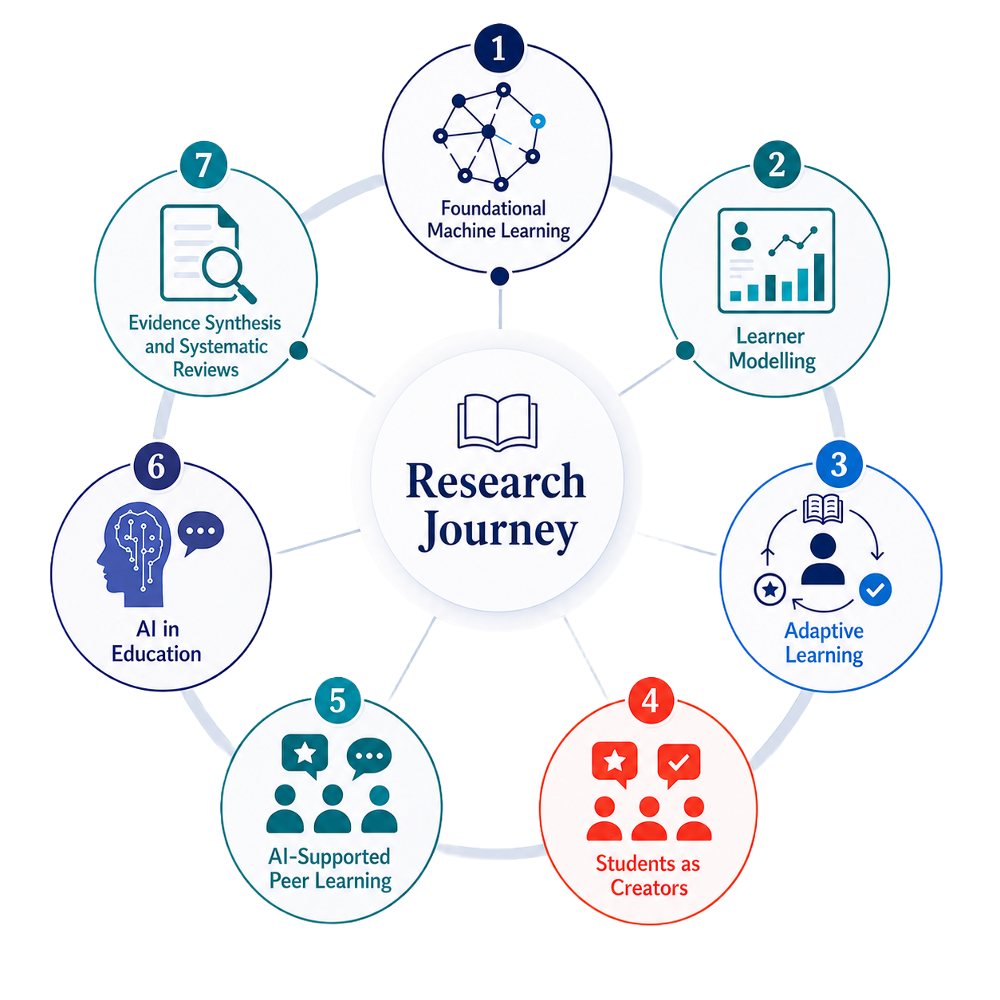
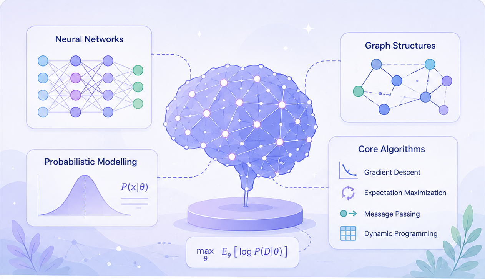
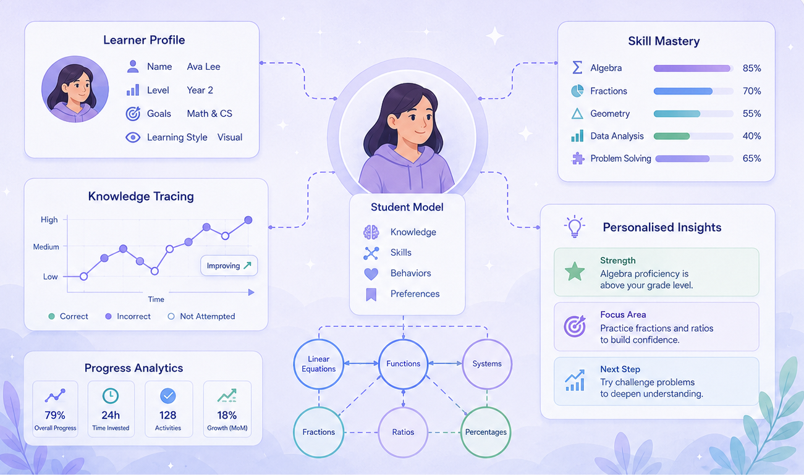
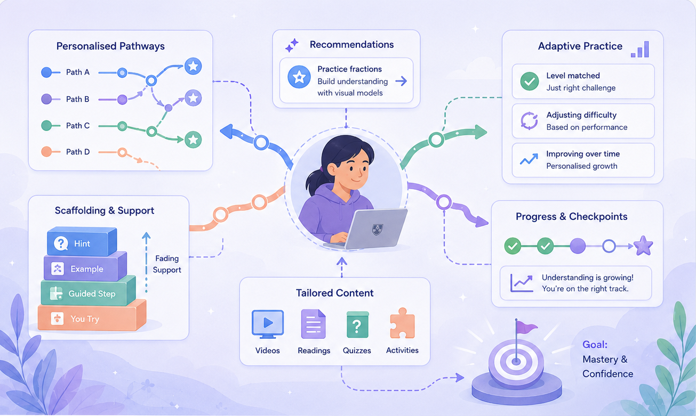
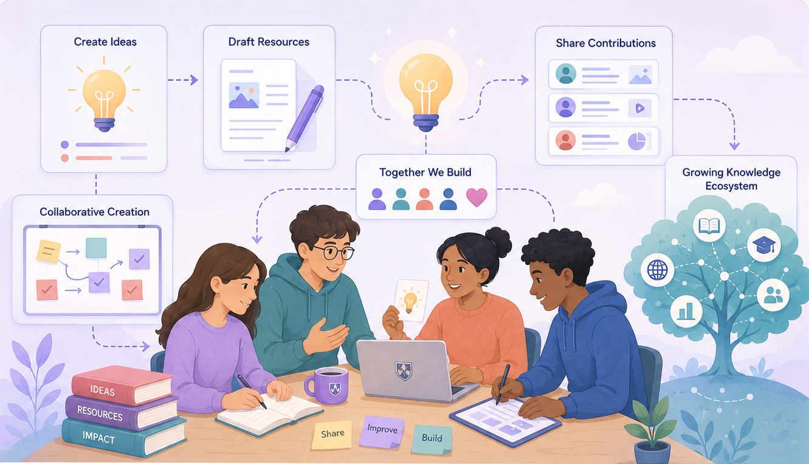
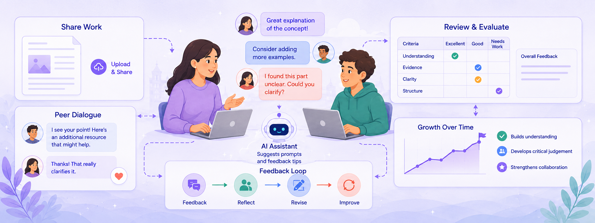
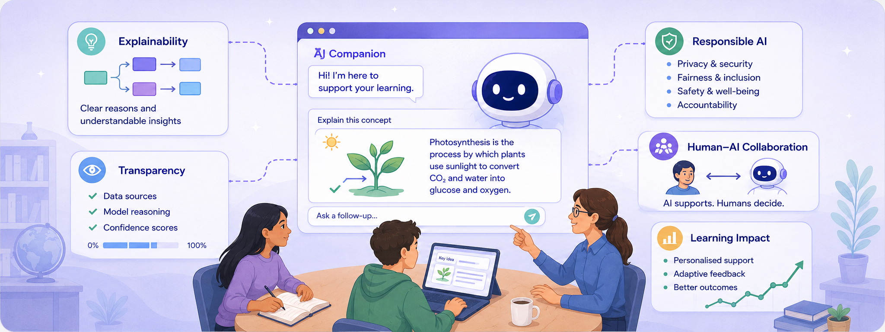
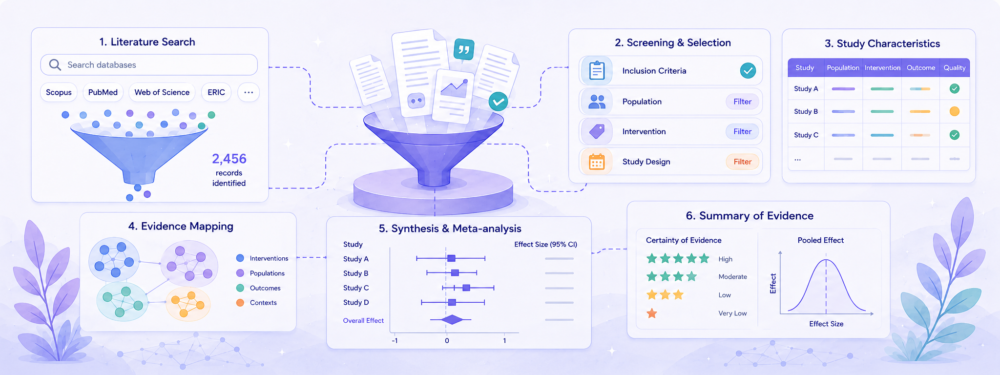

Research
My research sits at the intersection of the learning sciences, human–computer interaction, and artificial intelligence. It aims to design intelligent, fair, and human-centred technologies that enhance learning experiences and outcomes. My work is recognised internationally and informs both theory and practice.
Research Foundations
My research sits at the intersection of Computer Science, Learning Sciences, and Human–Computer Interaction. I draw on these fields to design and evaluate AI-powered educational technologies that make learning more effective, equitable, and engaging. This includes work in AI in Education, Learning Analytics, Educational Technologies, Crowdsourcing, Intelligent Systems, and Human-Centred AI. Together, these strands reflect a vision of educational technology that is scientifically grounded, computationally sophisticated, and deeply human.

Seven Connected Research Strands
My research agenda is organised around seven interlinked strands that span methods, theory and practice. Together, they form a coherent journey from foundational methods to real-world impact in learning and education. Some strands focus on building the technical foundations that make intelligent educational systems possible, while others examine how those systems can be designed to be fair, effective, and human-centred. Others still explore how learners themselves can be empowered as active participants in the knowledge-creation process. Across all of this work, the unifying goal is the same: to understand how technology and data can be harnessed to make learning more personalised, equitable, and impactful at scale.


Machine learning methods for educational data
This strand captures my earlier methodological work on machine learning approaches that support prediction, modelling, and discovery from complex educational and behavioural data. It provides the technical foundation for later work in learner modelling, adaptive learning, and learning analytics.

Knowledge tracing, skill modelling, and learner affect
Learner modelling is about building computational representations of what a student knows, how they think, and how their understanding evolves over time. This strand spans knowledge tracing, skill modelling, and affect-aware systems.

Personalised content, pacing, and feedback
This strand focuses on designing systems that personalise the learning experience in real time — adapting content, difficulty, pacing, and feedback to each learner's needs and goals.

Co-creation, learnersourcing, and knowledge building
This strand explores approaches where students move beyond passive consumption to become active producers of knowledge and learning materials. It includes learnersourcing, student-generated content, and students as partners in educational design.

Peer feedback, assessment, and evaluative judgement
This strand focuses on how students learn with and from one another through feedback, peer assessment, and evaluative judgement. More recently, this work has examined how AI can support students to give, receive, evaluate, and act on feedback in ways that strengthen learning.

Generative AI, ethics, and institutional readiness
This strand examines the broader implications of AI for teaching and learning — including generative AI tools, the ethics of AI in education, student adoption and resistance, and institutional policy. It bridges technical development and educational practice.

Systematic reviews, meta-analysis, and scoping reviews
This strand applies rigorous synthesis methods — including systematic reviews, meta-analyses, and scoping reviews — to consolidate and critique the state of evidence in educational technology and AI. It provides the empirical foundation for policy and practice.